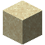

Getting started: pages
Getting started
Your first network
From vanilla materials to a working storage network with a Drive Bay, a Storage Drive and an Access Terminal, step by step.
On this page
This guide takes you from a fresh world to a storage network you can put items into and take them out of. You'll make the first silicon and circuit boards, build a  Lithography Press to etch the first dies, and then assemble a network from six things: a
Lithography Press to etch the first dies, and then assemble a network from six things: a  Network Controller, a
Network Controller, a  Power Inlet,
Power Inlet,  Network Cable, a
Network Cable, a  Drive Bay, a
Drive Bay, a  8K Storage Drive and an
8K Storage Drive and an  Access Terminal.
Access Terminal.
What you need#
All vanilla, from the Overworld:
| Material | For |
|---|---|
| Almost everything | |
| Ferrite, dies, cable, the Power Inlet | |
| Copper Foil and Solder Paste | |
 Sand, | Silicon, Fiberglass, photomasks |
| Solder Paste | |
| Silica Blend | |
| Network Cable | |
| One | The Network Controller |
| A | The Drive Bay and the Access Terminal |
You also need a Blast Furnace, a Furnace, a Stonecutter and a crafting table, and a source of FE from another mod: Encoded Logistics has no generator of its own. Anything that pushes FE into an adjacent block will do.
1. Ferrite, foil, fiberglass and solder#
Four simple materials go into nearly everything:
 Ferrite: an iron ingot and a redstone dust, shapeless.
Ferrite: an iron ingot and a redstone dust, shapeless. Copper Foil: a copper ingot in a Stonecutter gives two.
Copper Foil: a copper ingot in a Stonecutter gives two. Fiberglass: a glass block and two string give two.
Fiberglass: a glass block and two string give two. Solder Paste: a copper ingot and a slime ball give two.
Solder Paste: a copper ingot and a slime ball give two.
Fiberglass, Copper Foil and Solder Paste together make a  Circuit Substrate, the circuit board almost every device is built on. Make a handful.
Circuit Substrate, the circuit board almost every device is built on. Make a handful.
encodedlogistics:circuit_substrate
2. The first silicon#
Silicon Wafers take four steps:
- Blast Sand in a Blast Furnace to get
 Silica (it only works in a Blast Furnace).
Silica (it only works in a Blast Furnace). - Four Silica and a coal (or charcoal) make a
 Silica Blend.
Silica Blend. - Smelt the blend in a Furnace to get a
 Silicon Boule.
Silicon Boule. - Cut the boule in a Stonecutter: one boule gives four
 Silicon Wafer.
Silicon Wafer.
encodedlogistics:silicon_wafer_from_stonecutting
Each die below uses one wafer, and the first network needs four Logic Dies and one 8K Storage Die, so a couple of boules is enough to start.
3. The Lithography Press#
The  Lithography Press etches wafers into dies. It needs no network: it's a machine of its own, and it runs on FE fed into any of its faces. It buffers
Lithography Press etches wafers into dies. It needs no network: it's a machine of its own, and it runs on FE fed into any of its faces. It buffers lithography.pressCapacity (default 32,000) FE and takes up to lithography.pressMaxInput (default 512) FE per tick, so put it next to your generator (or a cable or conduit from another mod).
encodedlogistics:lithography_press
It has four slots: a photomask, a wafer, an additive, and the output. The photomask is never used up; each etch uses one wafer and one additive. While a recipe matches it spends the recipe's energy evenly over its time, and if the power runs out it pauses and keeps its progress. Hoppers work too: from the top into the photomask slot, from the sides into the wafer and additive slots, and out of the bottom from the output.
Screenshot needed
The Lithography Press screen with a Logic Photomask, Silicon Wafers and redstone in their slots, part-way through an etch, with the energy bar partly full
docs/site-src/images/getting-started/lithography-press-gui.png · 1280x720
Make the two photomasks you need now. Each is glass and Ferrite around a centre item:
 Logic Photomask: redstone in the centre.
Logic Photomask: redstone in the centre. Storage Photomask: Ferrite in the centre.
Storage Photomask: Ferrite in the centre.
encodedlogistics:logic_photomask
encodedlogistics:storage_photomask
4. Logic Dies and the 8K Storage Die#
With a photomask in the press:
| Die | Wafer | Additive | Photomask |
|---|---|---|---|
| Silicon Wafer | Redstone | Logic Photomask | |
| Silicon Wafer | Ferrite | Storage Photomask |
Make four Logic Dies (two for the controller, one each for the Drive Bay and the Access Terminal) and one 8K Storage Die. Swap the photomask by hand to switch recipes: hoppers can put one in, but never take it out. More about the press and the later dies is in Lithography.
5. Craft the network#
The  Network Controller is the heart of the network. It stores energy and hands out lanes to everything on the network.
Network Controller is the heart of the network. It stores energy and hands out lanes to everything on the network.
encodedlogistics:network_controller
The  Power Inlet feeds FE into the network. FE goes in only through its front (its port); cables join its other five faces.
Power Inlet feeds FE into the network. FE goes in only through its front (its port); cables join its other five faces.
encodedlogistics:power_inlet
 Network Cable joins network blocks together. One recipe makes eight.
Network Cable joins network blocks together. One recipe makes eight.
encodedlogistics:network_cable
The  Drive Bay holds up to ten Storage Drives, and its drives are the network's storage.
Drive Bay holds up to ten Storage Drives, and its drives are the network's storage.
encodedlogistics:drive_bay
The  8K Storage Drive goes in the Drive Bay. It holds 8,192 bytes, eight items to a byte, and each item type it holds reserves a share of them: about 65,000 items of one type, fewer as you add types, and up to
8K Storage Drive goes in the Drive Bay. It holds 8,192 bytes, eight items to a byte, and each item type it holds reserves a share of them: about 65,000 items of one type, fewer as you add types, and up to storage.driveTypeLimit (default 63) types. Storage Drives explains the byte model.
encodedlogistics:storage_drive_8k
The  Access Terminal is how you see and use what's stored. It's a part: it mounts on the face of a cable or of a network block, not as a block of its own.
Access Terminal is how you see and use what's stored. It's a part: it mounts on the face of a cable or of a network block, not as a block of its own.
encodedlogistics:access_terminal
6. Put it together#
- Place the Network Controller. A single block is a complete controller structure.
- Place the Power Inlet against the controller (or on a cable from it), with its front (the port) facing your generator. Like a dispenser, the port faces you when you place it, so stand where the generator will go, or place the generator in front of the port afterwards.
- Run Network Cable from the controller to where you want your storage.
- Place the Drive Bay at the end of the cable. Cables join every face but its front, and the front shows the drives.
- Put the Storage Drive in the Drive Bay: right-click the bay and drop the drive into one of its ten slots.
- Mount the Access Terminal: use it on the face of a cable (it goes on the face you click), or on a side of the controller or the Drive Bay (not the bay's front, which doesn't connect).
- Connect the power. Once FE flows into the inlet, the controller lights up and the network comes online.
Screenshot needed
A single Network Controller with a Power Inlet on one side (port facing a generator from another mod), a short run of Network Cable to a Drive Bay with one drive sled lit green, and an Access Terminal mounted on the cable, screen lit
docs/site-src/images/getting-started/first-network.png · 1600x900
Right-click the Access Terminal to open it and move items from your inventory into the network. They're stored on the drive, and every terminal on this network sees them. See Access and Fabrication Terminals for search, sorting and the fluid and energy tabs.
Checking it works#
Right-click the controller to open its Network screen. The status line should say Online, the lanes line should show two lanes in use (one each for the Drive Bay and the terminal), and the device grid lists what's on the network.
Screenshot needed
The Network Controller's screen for the network built above: status Online, 2 lanes in use, the energy gauge filling, and the device grid with a Drive Bay and an Access Terminal
docs/site-src/images/getting-started/controller-screen-first.png · 1280x720
If something is wrong:
| You see | Why | Fix |
|---|---|---|
| No power | The controller's buffer is empty. | Check the inlet's port faces the generator, and that the generator is running. |
| The terminal's screen stays dark | The terminal has no lane, or the network has no power. | Check the network is Online; make sure the terminal's cable actually joins the network. |
| Invalid structure | Touching controllers that don't make a valid shape. | One controller block is enough for now; see controller shapes. |
| Multiple controllers | Two controller structures joined by cable. | A network has one controller structure; see conflicts. |
Where next#
- Add drives: more 8K drives, then 32K ones (four 8K dies, a Logic Die, redstone and Solder Paste make a
 32K Storage Die). An
32K Storage Die). An  8K Fluid Storage Drive stores fluids. See Storage Dies and Drives.
8K Fluid Storage Drive stores fluids. See Storage Dies and Drives. - Learn how lanes run out and what to do about it: Lanes.
- Find out what comes next: Progression.